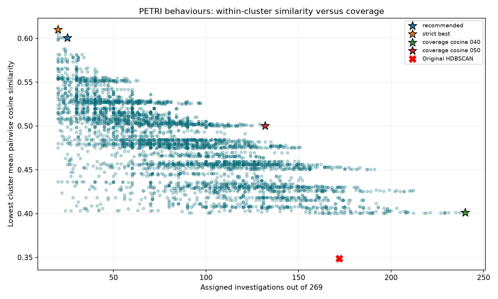

Cohesive subclusters and selective reclustering
Two separate analyses of the same 269 latest-qualifying PETRI investigation behaviour summaries. Existing clusters and vectors are preserved. No causes, other sources, new model calls, or semantic labels are included.
1. Subclusters inside the existing six HDBSCAN clusters
Open subclusters · minimum 2 members: 9 groups, 163/172 members retained, 9 residual. Every subgroup has mean pairwise cosine > 0.4.
Open subclusters · minimum 10 members: 5 groups, 142/172 members retained, 30 residual. Every subgroup has mean pairwise cosine > 0.4.
Minimum 2 is the unconstrained subgroup view; the additional minimum-10 view avoids tiny pairs. Original noise is not regrouped here. Every subgroup has a separate page showing every entry.
2. Reclustering the entire set, with rejection
All 269 items, including the original 97 noise items, are eligible. We search Ward, average-linkage and complete-linkage trees at every cut, plus refinements of the existing HDBSCAN partition. Small groups are rejected; peripheral items and low-cohesion groups may be rejected. Every retained group must have at least 10 members and mean pairwise cosine > 0.4.
Selection rule: among 4,366 unique valid candidate partitions, maximize the lowest cluster mean pairwise cosine similarity. Keep candidates within 0.02 of that best score, then take the one retaining the most members. Silhouette does not influence selection or rejection. This is a search over the stated candidates, not a globally optimal partition of every possible subset. The strict best and broader-coverage alternatives are also available.
| Result — click to inspect | Clusters | Assigned | Unassigned | Lowest mean cosine | Lowest mean silhouette | Overall silhouette |
|---|---|---|---|---|---|---|
| recommended | 2 | 25/269 | 244 | 0.601 | 0.171 | 0.178 |
| strict best | 2 | 20/269 | 249 | 0.610 | 0.164 | 0.182 |
| coverage cosine 040 | 8 | 240/269 | 29 | 0.401 | 0.033 | 0.060 |
| coverage cosine 050 | 8 | 132/269 | 137 | 0.500 | 0.068 | 0.108 |
| coverage cosine 060 | 2 | 25/269 | 244 | 0.601 | 0.171 | 0.178 |
| Original HDBSCAN | 6 | 172/269 | 97 | 0.349 | 0.052 | 0.099 |
Cosine similarity measures within-group resemblance and is the optimization target. Cosine silhouette measures separation from other retained groups and is diagnostic only. Both use the original vectors, before UMAP. Scores are selected on these same embeddings; rejection and small groups can inflate apparent quality. These are exploratory comparisons, not clustering accuracy or independent validation.

All search metrics · Candidate memberships and provenance · Summary data · Full method · Previous clustering review